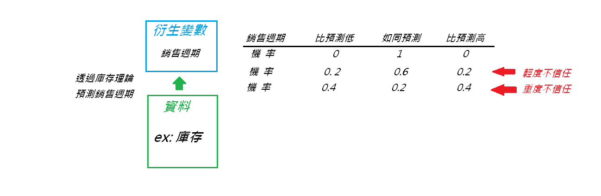

萬事皆可弊：狄雷克雷分布於資料預處理的運用
其實一直都很想分享這個主題，但一直都忘記
最近和一個朋友在討論問題時忽然回憶起來，想說就花點時間整理一下自己使用的心得
狄雷克雷分布（Dirichlet distribution）較常被人知道的應用是主題模型的建構（LDA, Latent Dirichlet Allocation）
但是我使用他的方式比較不是像 LDA 那樣建構多層的貝氏網路，儘管我還是有使用貝氏知識庫（BKB）
事實上狄雷克雷分布在貝氏運算十分好用，因為他具有共軛分布的性質，能降低運算的成本
在使用狄雷克雷分布於演算法開發，我較傾向於把它拿來做資料的預處理，或是給基於某些假設的衍生變數一個可信度
衍生變數 Derived Variables
衍生變數簡單來說，就是我們利用一到多筆資料來產生出來的新資料，例如：
- 資料離散化：我有一筆某些人的收入資料，將收入依照我劃分的區間分為 1, 2, 3 級
- 資料差異值：我有一筆某些人的收入資料，將收入與去年他的收入加減得到一年的變化
當然這些是比較簡單的衍生變數，我們也可以透過許多「理論模型」來得到衍生變數，例如：
- 隱含波動率：透過選擇權價格資料，從選擇權定價模型回推算市場標的的波動率
- 傅立葉轉換：透過將一個波動資料，從時域轉換到頻域，來觀察資料波動頻率
假如你和我一樣，經常透過理論模型來產生衍生變數，你會遇到一個問題，理論模型是否值得相信？
尤其是你如果還要把衍生變數的資料，和原本的資料放進類神經網路模型中，到底你這個理論模型的衍生變數能否派上用場？
這都是在做混合式類神經網路的開發時，需要不斷問自己的問題，因為你既然要混合其他方法
代表說很多模型可能都有優缺點，需要看能不能發揮綜合起來的效果，因此每個模型的適合度都是相對的
關於衍生變數的進階部份，基因規劃法（GP, Genetic Programming）可以幫你產生千奇百怪的衍生變數
狄雷克雷分布 Dirichlet distribution
狄雷克雷分布是一個機率分布，他非常適合來衡量一個機率事件是否「足夠隨機」
舉例來說，丟一顆骰子我們習慣丟到任何一點的機率是 1/6 ，然而這是在骰子是公平、丟的動作足夠隨機
然而事實是可能骰子被動了手腳，有人想作弊，這個在流動性不佳的金融商品交易上特別容易發生，也就是價格不夠隨機
當然這些作弊你不一定要去抗議，俗稱危機就是轉機，你如果能察覺就要利用這個方法來扭轉頹勢
如果你有這樣的想法，那迪雷克雷分布會是一個不錯的工具，統計的知識可以再去補
骰子被作弊的遊戲
讓我們考慮一個情況，一個正常骰子丟到 1-6 點的機率應該是 { 1/6, 1/6, 1/6, 1/6, 1/6, 1/6 }：
然而如果考慮存在一個作弊的機率，使得丟到各點的機率偏向得到 1-2 點，那可能有另外一組形式：
所以當我們用機率來寫，就要使用條件機率：
$$ P(\ \color{red}{X=2點} \ \ | \ \color{red}{\alpha = 作弊} \ ) = \color{red}{\frac{3}{10}} $$ $$ P(\ X=6點 \ \ | \ \color{red}{\alpha = 作弊} \ ) = \frac{1}{10} $$ $$P(\ X=2點 \ \ | \ \alpha = 正常 \ ) = \frac{1}{6} $$
因此，如果你考慮的是像前面那樣子的一個情況，就可以看做是服從狄雷克雷分布：
$$ \color{brown}Z \sim Dir(\alpha) $$
這邊的 Z 呢，就是你考慮的各種機率組合，例如前面我們考慮了作弊於 1-2 點與正常的情況：

而 alpha 呢，就是丟骰子之前，你考量可能有的事件機率的組合，可能有作弊的組合，或是正常的組合：
那目前的問題是，我們想知道到底正常的情況發生的機率有多少，我們想看到底遊戲是否是公正的：
$$ P \left ( \color{red}{\alpha = 作弊/正常 } \right | \color{brown}{Z\ =\ 遊戲進行後的觀察}\ ) = ? $$
貝氏統計
在解決前面那個問題之前，我們得先來了解貝氏統計，或是條件機率的概念
我們學過兩事件交集之機率，可以寫成在事件發生前提下另一事件發生的機率，與前提事件發生的機率相乘：
$$ P(\ Z = z \ \bigcap \ A = \alpha\ ) = P( \ A = \alpha \ |\ Z = z \ )P(\ Z = z\ ) = P(\ Z = z \ | \ A = \alpha \ )P( \ A = \alpha \ )$$
我們要的是後半兩個式子，這邊仍然令 Z 是丟骰子的事件，而 Alpha 是作弊與沒作弊的前提事件：
$$ P( \ A = \alpha \ |\ Z = z \ )\color{blue}{P(\ Z = z\ )} = P(\ Z = z \ | \ A = \alpha \ )P( \ A = \alpha \ ) $$
由於不考慮作弊與否的情況是站在上帝視角，丟骰子到任何一點的可能機率基本上是固定的，所以忽略掉藍色 P(Z=z) 可得：
$$ P( \ A = \alpha \ |\ Z = z \ ) \ \sim \ P(\ Z = z \ | \ A = \alpha \ )P( \ A = \alpha \ ) $$
這邊的波浪符號，是一種成正比的意思，因為 P(Z=z) 是常數，可但是我們不知道是多少
有沒有發現，上面式子左邊部份很像是我們要求的呢？
$$ P \left ( \color{red}{\alpha = 作弊/正常 } \right | \color{brown}{Z\ =\ 遊戲進行後的觀察}\ ) \ \sim \ P(\ \color{brown}{Z =\ 遊戲進行後的觀察} \ | \ \color{red}{\alpha = 作弊/正常} \ )P( \ \color{red}{\alpha = 作弊/正常} \ ) $$
如果你有學過一點統計，你可能會想 alpha 和 Z 的機率分布怎麼決定呢？
至少可以確定的是，alpha 由於有多種可能，每一種可能對應一種機率，所以應該就是 多項分布
倘若如此，Z 在 alpha 給定的前提又是狄雷克雷分布的話，那 alpha 在給定 Z 的前提也會是狄雷克雷分布
你可能搞不太清楚，不過沒關係，這主要是為了方便讓我們透過不斷重複實驗（例如吉布斯採樣）來修正 alpha 機率
在資料預處理上的運用
當我手上有一筆資料時，我會用一些理論模型來產生一些衍生變數：
但是由於我不相信銷售週期真的如理論模型所計算，所以我會先給衍生變數一個機率：
然後加上我的不信任的情況（也就是我認為理論模型可能出錯的門檻）：

然後執行狄雷克雷分布的吉布斯採樣，最後會得到一組機率是我覺得最有可能的情況：
接著把這組情況對應的衍生變數計算出來，得到三組資料丟入類神經網路模型進行原本打算做的預測：
透過得到的預測值，做一個組合預測，這就是我拿狄雷克雷分布做預處理的方法
打到後面有點累了，虎頭蛇尾請見諒 XD